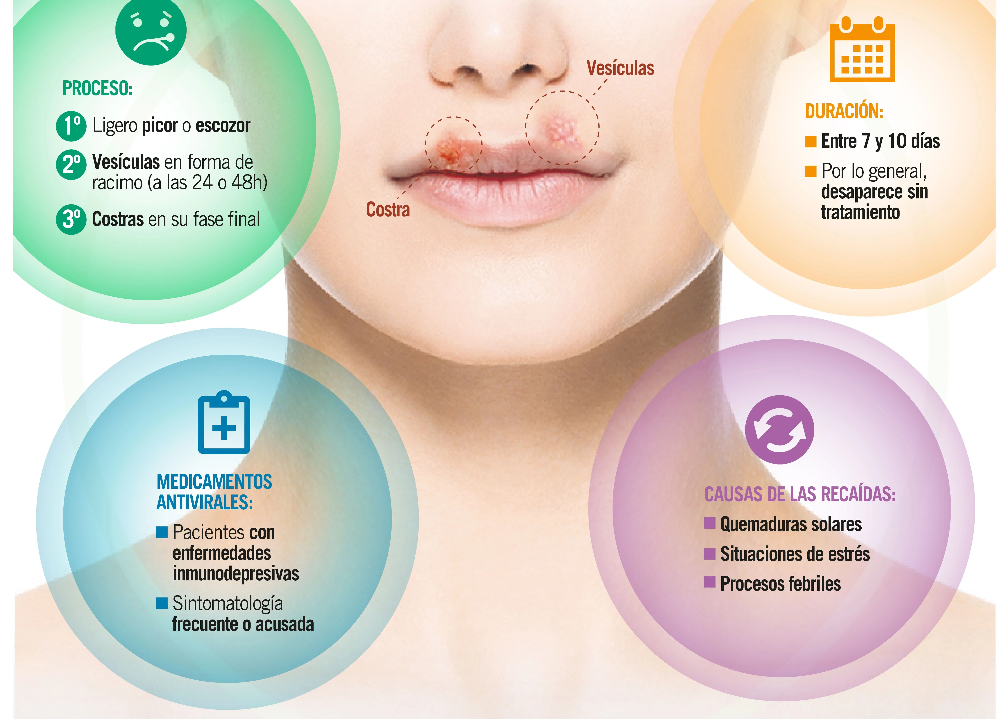

Herpes labial

Herpes labial
El herpes labial, también conocido como “calenturas”, son unas lesiones que aparecen en la boca, labios o nariz.
A diferencia de las aftas, el herpes labial es contagioso porque está producido por el virus del herpes simple (VHS-1).
De forma mayoritaria, las personas se contagian de este virus en la infancia y dura toda la vida.
Una vez ha desaparecido el herpes labial, es probable que en algún otro momento vuelva a aparecer, ya que el virus no desaparece.
No existe un tratamiento que elimine el virus, aunque sí puedes aplicar pomadas o productos que reduzcan las molestias del herpes.